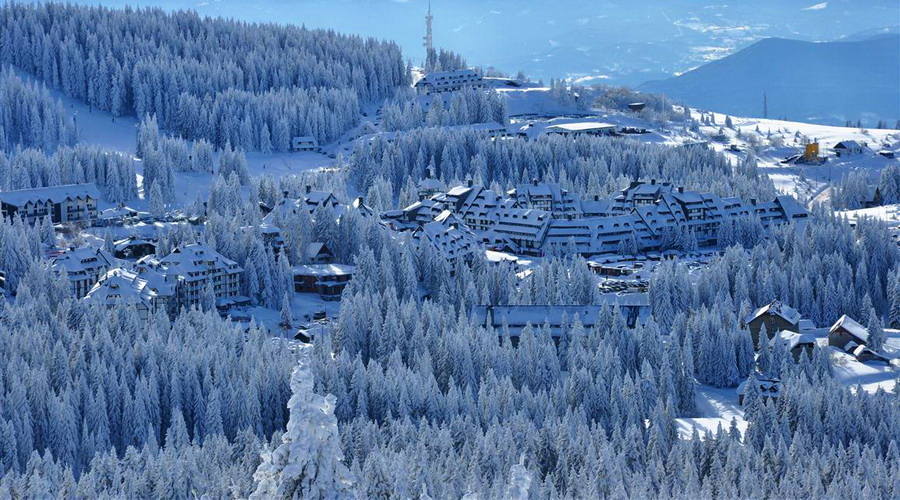
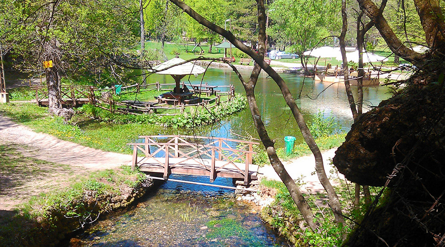
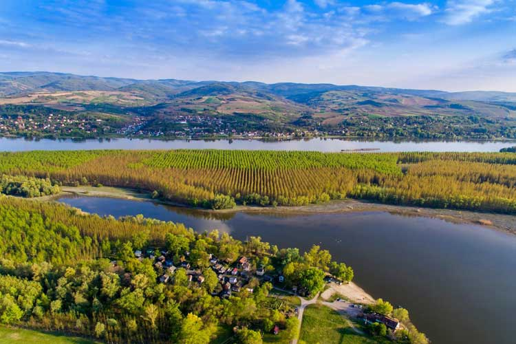
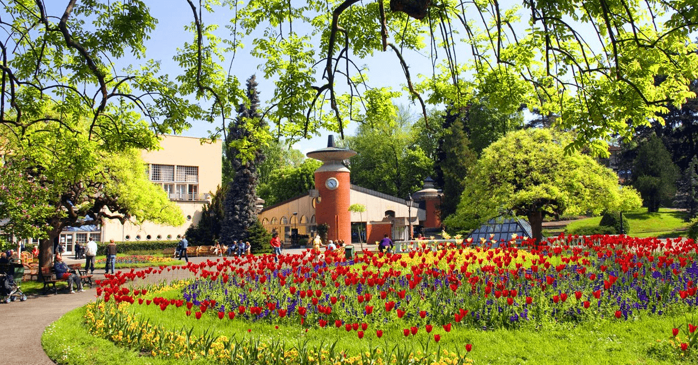
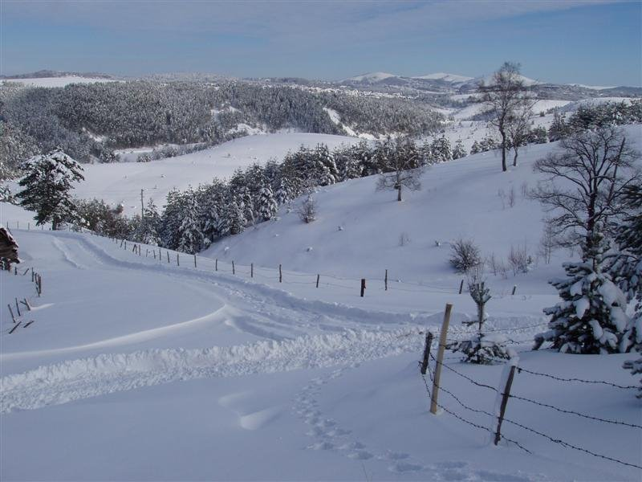
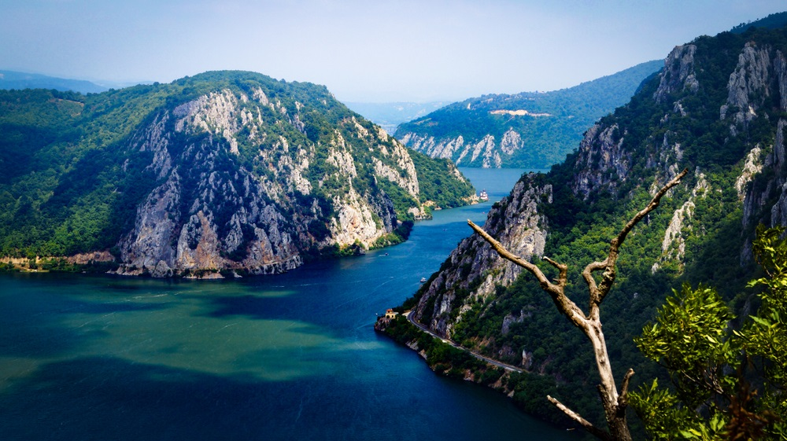

Kopaonik
Kopaonik (poznat i kao Srebrna planina) je najveći planinski masiv u Srbiji koji se
pruža od severozapada ka jugoistoku dužinom od oko 75 km, dosežući u srednjem delu
širinu od oko 40 km. Jedan njegov deo je zaštićena zona pod imenom nacionalni park
Kopaonik u okviru koga postoji veći broj zaštićenih prirodnih celina, a na njemu se
nalazi i najveći skijaški centar u Srbiji. Njegov najviši vrh je Pančićev vrh sa 2017 m
nadmorske visine. na kome se nalazi mauzolej čuvenog srpskog prirodnjaka po kome
je dobio ime, oko koga se nalazi baza vojske Srbije. Ceo masiv je dobio naziv po
velikom rudnom bogatstvu koje je na njemu eksploatisano još od srednjeg veka, a na
njegovom širem prostoru je smešten čitav niz kulturno-istorijskih spomenika iz perioda
od XII do XV veka. Zahvaljujući razvijenom turističkom centru sa savremenim
hotelima i pratećim objektima, Kopaonik predstavlja jednu od najpopularnijih
turističkih destinacija u Srbiji.
Sokobanja
Jedno od najposećenijih turističkih mesta u Srbiji je Sokobanja. Smeštena je u
sokobanjskoj kotlini na 400 m. nadmorske visine. Kroz Sokobanju protiče reka
Moravica. Severno od Sokobanje nalazi se planina Rtanj (1655m), a južno Ozren
(1174m), i Devica (1187m), koje su bogate šumom i lekovitim travama. Na lokalitetu
Sokobanje nađene su iskopine iz doba neolita i rikske grobnice iz I i II veka. Na
rimskim temeljima Turci su podigli amam - prvi i najstariji objekat za lečenje u
Sokobanji. Amam je obnovljen odlukom knjaza Miloša 1833. godine. U
to vreme u Srbiji je bilo 10 lekara i farmaceuta. U Sokobanji je stalno radio dr.Đoka
Novaković- "Pokrštenjak". Kroz vekove Sokobanja menja svoj naziv: zvala se Balnea
,
Banja, Velika Banja, Akelksinačka Banja, Sokol Banja, a od 1859 godine dobila je
ime sokobanja po istorijskom gradu Sokogradu ( srušen 1416 godine). Kao prirodno
lečilište poznata je još od doba Rimljana, a prvi pisani podaci o njenoj lekovitosti
datiraju iz 1413 god. Konstantin Filozof, 1658 god. Hadži Kalfa, 1663 god. Elvija
Celebija, 1737 god. Grof Smetans, a pišu i Vuk Karadžić i Felix Kanić.


Fruska Gora
Fruška gora, nekadašnje ostrvo Panonskog mora, pripada ostrvskim, starim
gromadnim planinama. Pružajući se u pravcu zapad–istok, dužine oko 80 kilometara i
širine 15 kilometara, sa najvišim vrhom od 539 metara – Crvenim čotom, Fruška gora
predstavlja dominantnu orografsku celinu Panonske nizije. Fruškogorski planinski
venac s istoka i severa ograničavaju aluvijalne ravni Save i Dunava, a sa juga i zapada
sremske lesne zaravni. Rimljani su je nazivali Alma Mons, što znači „plodna gora”, a
današnji naziv potiče od starog slovenskog etnonima Frug, sinonima za Franke, što
imenu daje značenje „planina Franaka”. Zbog burne geološke prošlosti, pravoj riznici
fosilne flore i faune u svojim sedimentima, mnogobrojnim retkim predstavnicima
biljnog i životinjskog sveta koji obitavaju na ovom području, kao i neprocenjivoj
kulturno-istorijskoj baštini, Fruška gora je još 1960. proglašena nacionalnim parkom
prirode.
Vrnjacka Banja
Kraljica banjskog turizma, kako neformalno nazivaju Vrnjačku Banju, od davnina je
bila poznata po svojim lekovitim izvorima. Ovo područje je bilo naseljeno još u
praistoriji. Arheološki nalazi, oruđe iz mlađeg kamenog doba, otkrivaju mogućnost da
su i praistorijski ljudi koristili banjske izvore. O lekovitosti vode u Vrnjačkoj Banji
prvi put se može čuti u doba Rimljana. Oni su na ovom mestu izgradili lečilište Aquae
Orcinae, i izvor tople vode Fons Romanus. Veruje se da su prethodno i starosedeoci,
keltsko pleme Skordisci, koristili vodu sa izvora za piće, kupanje i lečenje. Koliko je
banjska voda bila čuvena u antičko doba, najviše govore brojni zlatnici koji su
pronađeni. Rimljani su bacali tadašnje novčiće u bunare. Osim zlatnika iz 2. do 4.
veka, u banji su takođe pronađeni i ostaci bazena za kupanje. Veruje se da su i južni
Sloveni znali za lekovitost mineralnih voda kada su nastanili balkansko poluostrvo.
Ipak, o istoriji Vrnjačke Banje tog doba se malo zna.U legendama se spominje da su
Turski begovi i spahije umeli da dolaze na odmor u banju, dok je domaće stanovništvo
bilo primorano da ih služi. Starosedeoci su tada, kako legende kažu, zatrpavali izvore
iz revolta.


Zlatibor
Kao deo starovlaške visije Zlatibor je talasasta planina, oivičena planininskim
vrhovima i ispresecana brojnim rekama i potocima. Centralni deo planine je blago
zatalasan, dok se po obodu nalaze duboki klanci, najčešće teško pristupačni, koji su
pokriveni borovom šumom. Posebnu draž predstavljaju planinski vrhovi: Tornik
(1496m), ujedno i najviši vrh Zlatibora, Čigota (1422m), Brijač na Murtenici (1480m)
i drugi, sa kojih se pruža neverovatan pogled na zlatiborsku visoravan. Kada je o
klimi reč, Zlatibor odlikuju alpska i subalpska klima, sa svojim posebnim obeležjima.
Leta su prijatna, sa umereno toplim danima i hladnim noćima, što čini da mnogi spas
od nesnosnih letnjih žega potraže upravo na Zlatiboru. Sa druge strane, zlatiborske
zime su, po pravilu, duge i snežne. Ovde sneg pada od oktobra do maja sa kraćim ili
dužim prekidima. Upravo ova okolnost utiče da se Zlatibor poslednjih godina
afirmisao kao zimski centar, a naročito nakon izgradnje modernog skijaškog
kompleksa na Torniku. Ono što Zlatibor posebno izdvaja od drugih planinskih
centara u Srbiji i okruženju je velika osunčanost ove planine, koja može da se pohvali
sa prosečno 2000 sunčanih sati tokom godine, što je približava mediteranskoj klimi.
Djerdapska klisura
Đerdapska klisura jedan je od najlepših prizora u ovom delu sveta, gde Dunav menja
svoju širinu od par kilometara do par stotina metara, vijuga i juri, gradeći moćnu
klisuru visokih stenovitih litica. Kada ste već tu, nemojte propustiti ni da pogledate
čuvenu Trajanovu tablu, koja se vidi samo iz čamca. Kad se umorite od silne prirodne
lepote, prošetajte po jedinstvenom 8000 godina starom neolitskom naselju Lepenski
vir ili bacite pogled na ostatke starih rimskih utvrđenja i srednjevekovnih tvrđava...
Đerdap se pominje još od pre nove ere, kada su trgovci iz stare Grčke tuda prevozili
robu malim drvenim brodovima. Veći značaj Đerdap dobija za vreme rimskih careva,
kada se probijaju putevi na levoj i desnoj obali, kojima je trebalo omogućiti
legionarima prolaz u pohod na Dakiju (današnja Rumunija). Mnogi rimski carevi su
učestvovali u uređenju Đerdapa, počevši još od Julija Cezara, ali je najpoznatiji ostao
Trajan, osvajač Dakije, koji je uspeo da obezbedi prolaz kroz klisuru. On je dovršio
put uklesan u stene desne obale Dunava, i izgradio prvi most na Dunavu između
Turnu-Severina i Kostola, koji su njegovi naslednici srušili pri povlačenju iz Dakije, u
strahu da ova plemena ne napadnu već oslabljenu rimsku imperiju.

U ovom videu mozete takodje videti neke od znamenitosti Srbije
A sada je vreme za nasu nagradnu igru:
U sledecoj tabeli mozete videti putovanja koje dodeljujemo:
|
Dana |
Broj osoba |
Hotel |
Broj nagrada |
| Kopaonik |
7 |
2 |
4 zvezdice |
5 |
| Sokobanja |
5 |
4 |
3 zvezdice |
10 |
| Fruška Gora |
7 |
3 |
3 zvezdice |
5 |
| Vrnjacka Banja |
8 |
2 |
5 zvezdica |
4 |
| Zlatibor |
10 |
5 |
5 zvezdica |
1 |
| Djerdapska klisura |
4 |
2 |
3 zvezdice |
10 |
Na vama je samo da popunite ovaj formular i cekate izvlacenje.
Formular